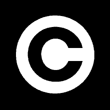

رباتیک آزاد
جلسهٔ رباتیک آزاد
دانشگاه پیام نور
سعید علیجانی
۱۳۹۴/۱/۲۷
wiki.lfkf.org
فهرست مطالب:
*رباتیک آزاد چیست ؟
*چرا رباتیک آزاد
*اهداف رباتیک آزاد
*چگونگی پیادهسازی
*جامعهٔ رباتیک آزاد

رباتیک آزاد چیست؟
*دانش رباتیک: دانشی ترکبی
*آزادسازی دانش رباتیک
*تولیدکنندهٔ دانش = مصرفکنندهٔ دانش
چرا رباتیک آزاد؟
*کاهش هزینهها
*انتقال دانش به جامعه
*کمک کردن افراد به یکدیگر
*افزایش میزان تولیدات
*رفع نیاز جامعه
کاهش هزینهها
*هزینهٔ آموزش نیروی متخصص
*هزینههای تحقیقاتی
*هزینهٔ تولید محصول نهایی
اهداف رباتیک آزاد
*ایجاد یک بستر کامل دانش آزاد در زمینهٔ رباتیک
*فعالیت آزاد و فراتر از شرکتها و کشورها
*جلوگیری ازتحمیل هزینهها موازی
*آموزش آزاد برای تمام افراد
*افزایش مشارکت جامعه و ایجاد یک کامیونیتی
*تغییر سیستم روبوکاپ از سیستم رقابتی به مشارکتی
چگونگی پیادهسازی
*پیدا کردن چرایی پیدایش رباتیک آزاد
*شناخت مشکلات فعلی پیشروی رباتیک
*برنامهریزی درست برای رسیدن به اهداف
ایجاد یک کامیونیتی آزاد
*مشابه کامیونیتیهای نرمافزار آزاد
*بالا بردن کیفیت
*آشنایی با روش فعالیت در جوامع آزاد
استفاده از مجوزهای آزاد

آموزش آزاد رباتیک
*افراد از این سیستم یاد بگیرند و به این سیستم اضافه شوند
تامین هزینهها
*کامیونیتی رباتیک آزاد : پشتیبان
*کم شدن هزینهها
شفاف بودن فعالیتها
*افراد با آگاهی و اطمینان وارد گروه شوند
*جامعه برای تامین هزینهها از فعالیتهای گروه آگاهی داشته باشد
ایجاد رسانه
*اطلاعرسانی - آموزش - هماهنگی
*وبسایت
*لیست پستی
*ویکی
*ابزارهای کار گروهی
مستندسازی
*به اشتراک گذاشتن مسیر طیشده برای افراد جدید
*از طریق رسانهها
نیاز و رفع نیاز
*قبل از هر گونه فعالیت نیازسنجی شود
جایگاه افراد
*هر فرد در زمینهای که تخصص دارد فعالیت کند
*با توجه به شفافیت فعالیتها، افراد ابتدا جایگاه خود را در گروه پیدا کنند
ویژگیها
*دنبال ریاست نباشیم
*فعالیتهایی را انجام میدهیم که به نفع خومان است
*تواضع
*در گروه منفعل نباشیم
جامعه
*صاحبان دانش
*علاقهمندان به دانش
*نیازمندان دانش
با سپاس از شما
ارتباط با ما:
بنیاد دانش آزاد
پروژهٔ رباتیک آزاد